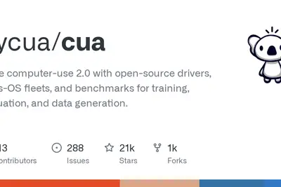
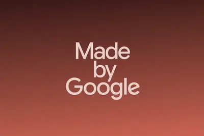
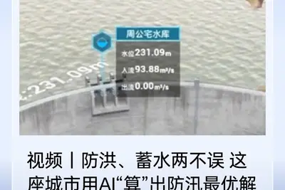
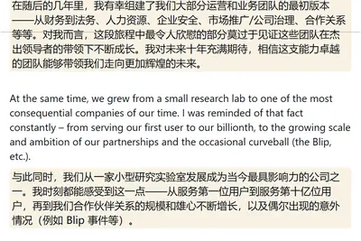
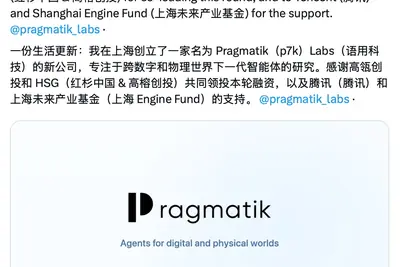
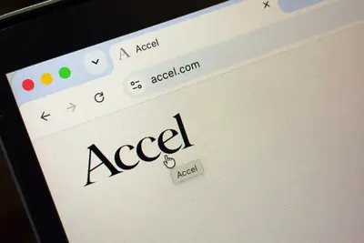
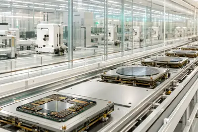
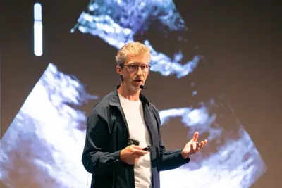

模型與研究
模型與研究
AI 每日新聞彙整
模型與研究

開源社群全部主題
模型與研究
重點progressunsolvedproblems
Anthropic 未發表模型在黎曼猜想上取得進展
TechCrunch 報導，Anthropic 一款尚未發表的模型在數學重大未解問題「黎曼猜想」上取得超乎預期的進展。雖然並未真正解決這個懸而未決超過 150 年的難題，但成果顯示大型語言模型在數學研究上的潛力。
重點nemotronopensourcemicrosoft
傳英偉達研發萬億參數開源模型 Nemotron 4，劍指全球頂級開源陣營
The Information 引述參與者消息指出，NVIDIA 正研發新一代 AI 模型系列 Nemotron 4，目標與全球最先進的開源模型競爭。NVIDIA 是少數積極推出開源模型的美國大型科技企業，生成式 AI 副總裁 Kari Briski 表示，投資 Nemotron 是因為相信每家企業都應能使用開源模型。此舉也呼應近期中國低價模型逼近美系頂尖系統、開源模型關注度上升的趨勢。
2 家媒體報導opennemotronnvidia
NVIDIA 發表 Nemotron 3.5 Lightning 開源模型，主打本地端代理型 AI 效率
NVIDIA 擴展 Nemotron 3 模型家族，推出 Nemotron 3.5 Lightning，強調在長時間執行的代理型 AI 工作負載中具備同級最高效率，並搭配 NeMo Switchyard 軟體。NVIDIA 同時宣布八月起將與本地 AI 社群合作，推動開源模型與智慧代理生態系發展。
amievideomedical
Google 醫療 AI 系統 AMIE 展示即時臨床視訊問診能力
Google 發表研究醫療 AI 系統 AMIE 的最新進展，透過首創研究展示即時臨床視訊諮詢能力。AMIE 被定位為可與病患即時互動的醫療對話系統，凸顯 Google 在醫療 AI 領域的研發推進。
產品與應用
重點4 家媒體報導usersgeminigoogle
Google Gemini 月活躍用戶突破 10 億，成 Google 史上成長最快產品
Google 執行長 Sundar Pichai 宣布 Gemini 月活躍用戶已達 10 億，成為 Google 史上成長最快的產品。TechCrunch 報導指出，63% 的 Gemini 用戶使用語音功能，平台每日生成超過 1.5 億張圖片。Gemini 是繼 ChatGPT 之後第二個突破 10 億用戶的 AI 應用。
- Simon Willison Stealing Reasoning Traces from Proprietary LLM APIs
- Ars Technica AI Gemini becomes Google's fastest-growing product ever as it hits 1B users
- The Verge AI ChatGPT and Gemini both just passed 1 billion users
- TechCrunch AI Google’s Gemini app surges to 1 billion users
重點geminiflashgoogle
Gemini 應用月活躍突破 10 億，Google 史上成長最快產品
Google 執行長 Sundar Pichai 宣布 Gemini 應用月活躍用戶達 10 億，成為 Google 史上成長最快的產品，也是該公司第 14 款跨越十億用戶門檻的產品，相較 6 月的 9 億在不到兩個月內再上一階。
3 家媒體報導chatgptlinuxopenai
OpenAI 推出 Linux 版 ChatGPT 桌面應用，並開始測試 ChatGPT 內廣告
OpenAI 釋出 Linux 版 ChatGPT 桌面應用預覽版，支援 Ubuntu、Debian、Fedora 等發行版，提供 x64 與 arm64 的 .deb 與 .rpm 安裝包，整合 ChatGPT、ChatGPT Work 與 Codex 三項功能。此外，OpenAI 也宣布開始在 ChatGPT 中測試廣告，以支援免費使用，強調明確標示、不影響回答中立性及保護隱私。
- IT之家 OpenAI 推出预览版 ChatGPT for Linux 桌面端应用
- TechCrunch AI OpenAI launches ChatGPT desktop app for Linux
- OpenAI Testing ads in ChatGPT
agent1.2
高盛導入代理式 AI 虛擬工程師，宣稱開發效率提升三倍
高盛將代理式 AI（Agentic AI）導入軟體工程核心，讓虛擬工程師與約 1.2 萬名真人工程師協作，內部宣稱開發效率提升約三倍，顯示金融業正加速以 AI 代理重塑工程團隊運作模式。
- 科技新報 TechNews 高盛引進代理式 AI 化身「虛擬工程師」，開發效率狂飆三倍
marcsuccimesh
台灣臨床 AI 落地四大優勢浮現，國際醫療大廠來台對接
經濟部國貿署與外貿協會舉辦「AI 醫療新局，台灣鏈結全球」論壇，邀請麻省總醫院 MESH 創辦人 Marc Succi 與 GE HealthCare 全球 AI 負責人 Jan Beger 來台。Succi 指出台灣在臨床 AI 落地方面具備四大優勢，有助接軌國際市場。
- DIGITIMES 台灣具臨床AI落地4大優勢 接軌國際市場
factoriesagesoftware
軟體工廠概念在 AI 時代復興，強調自動化驗證與量產
ZDNet 報導，「軟體工廠」概念在 AI 時代重新受到關注。這類服務能接收 vibe-coded 應用，自動進行驗證、測試，再以可重複的方式量產並交付給廣大使用者，被視為 AI 輔助開發流程的下一步演進。
pixelannouncementsgoogle
Google 將於 8 月 12 日發表 Pixel 11 系列等多款新機
Google 預計在 8 月 12 日舉行 Made by Google 2026 活動，發表多款 Pixel 新裝置。根據洩漏資訊，Pixel 11 系列將推出多種顏色，Pro 機型可能內建補光燈，Google 官方預告也呼應了這些方向。

寧波以 AI 預報模型 5 秒產出防汛調度方案
面對颱風「白海豚」帶來的強降雨，浙江寧波導入 AI 預報模型處理水庫調度難題。以往需 5 到 10 分鐘的方案運算，如今縮短至 5 到 10 秒，模型每 5 分鐘更新建議，協助調度員即時調整水庫下洩流量。

flyerspromptscreate
用 AI 製作不惹人厭的傳單：八個實用提示與指令
ZDNet 整理出用 AI 生成傳單的八個技巧與提示詞。多數 AI 生成的傳單品質仍不佳，但透過正確的指令設計，可大幅改善排版與視覺效果，讓成品不再令人反感。
rgb115led
Sony 115 吋 RGB LED 旗艦電視 9 系 II 開賣，售價 14.9 萬人民幣
Sony 超旗艦 RGB LED 電視 9 系 II 新增 115 吋版本（K-115XR90M2），於 8 月 10 日正式開賣，定價 149,999 元人民幣。搭載 XR 晶片，主打頂級家庭劇院與遊戲顯示市場。
企業與資金
重點riverxai1.1
xAI 共同創辦人新創 River AI 成立兩個月募得 11 億美元
由 xAI 共同創辦人 Igor Babuschkin 創立的 River AI，僅成立兩個月便獲得 General Catalyst 領投的 11 億美元資金。該公司聚焦「個人代理人」（personal agents）願景，創下新創極速募資紀錄。
2 家媒體報導coolightcapsomething
OpenAI 營運長 Brad Lightcap 宣布離職，將另起新項目
OpenAI 資深副總裁暨前營運長 Brad Lightcap 在任職八年後宣布離開公司，並在內部備忘中表示將「展開新事業」。他是 OpenAI 在任最久的核心高階主管之一，離職消息凸顯近期 OpenAI 高層人事持續異動。
- The Verge AI Another OpenAI executive takes off
- TechCrunch AI Brad Lightcap, OpenAI’s longtime COO, is leaving to ‘start something new’
layoff
甲骨文為籌資 AI 基建數百億美元債務，傳將啟動新一輪裁員
知情人士透露甲骨文正制定新一輪裁員計畫，部分團隊裁員比例可能達兩位數，目標在 9 月 1 日新財季開始前完成。甲骨文目前背負數百億美元債務用於資料中心與 AI 晶片投資，2026 財年截至 5 月底員工總數已減少 2.1 萬人，降幅 13%。
bradlightcapfunding
OpenAI 營運主管 Lightcap 宣布離職創業，Altman 公開致謝
OpenAI 高級主管 Brad Lightcap 於 8 月 12 日在 X 平台宣布將離職創業。他 2018 年加入 OpenAI，今年 4 月才從 COO 轉任特殊項目負責人；執行長 Sam Altman 隨後留言感謝其多年貢獻。

pragmatiklabstencent
前阿里林俊旸創辦 Pragmatik Labs，攻跨虛實 AI 代理
今年 3 月離開阿里巴巴的「基模四傑」之一林俊旸，於上海成立新公司 Pragmatik Labs（p7k），聚焦橫跨數位與物理世界的下一代 AI 代理。本輪由高榕創投與紅杉中國共同領投各約 1 億美元，騰訊與上海未來產業基金參投，融資規模達數億美元。

amdnvidia
仁寶董事長陳瑞聰：仁寶已從 AI 伺服器門外漢晉升中段班
仁寶董事長陳瑞聰表示，兩年前仁寶仍是 AI 伺服器門外漢，如今已位居中段班，期望再努力進入前段班。DIGITIMES 評析指出，仁寶要打入 NVIDIA 與 AMD 供應鏈難度較高，反觀企業品牌端代工機會較大。
- DIGITIMES 評析：NVIDIA、超微大門難進 仁寶如何拚進AI伺服器前段班？
indiafundaccel
Accel 數週內超額認購完成 5.5 億美元印度新基金
美國創投 Accel 在前一支 6.5 億美元印度基金仍有逾 55% 可動用額度的情況下，數週內即超額認購完成新一檔 5.5 億美元印度基金，顯示資金對印度新創市場仍具高度興趣。

2026nvidia
2026 年 AI 概念股出爐：以黃仁勳五層蛋糕拆解台股受惠鏈
《數位時代》以黃仁勳提出的「AI 五層蛋糕」架構，整理 2026 年台股 AI 概念股。從電力、晶片到應用層，涵蓋大同、川湖、日月光等代表個股，協助投資人一次掌握五大產業鏈的受惠廠商。
晶片與基礎設施
重點294funding
台積電核准 294 億美元資本預算，衝先進製程與封裝穩 AI 軍心
在全球半導體類股因 AI 基建支出疑慮承壓之際，台積電董事會核准約 294 億美元資本預算，鎖定先進製程與先進封裝擴產，藉實際投資動作回應市場對 AI 需求持續性的擔憂。
- 科技新報 TechNews 台積電核准 294 億美元資本預算，布局先進製程與封裝打破市場對 AI 發展憂慮
重點cowos2029microsoft
台積電 CoWoS 2029 年拚 14 倍光罩以上，傳微軟洽談 30 萬顆 AI 晶片產能
台積電先進封裝副總何軍表示，5.5 倍光罩 CoWoS 已進入量產，AI 客戶良率穩定超過 98%，部分達 99%；路線圖顯示 2028 年擴至 14 倍光罩，2029 年再推進至 14 倍以上。過去三年 CoWoS 產能幾乎每年翻倍，目前已有 10 座先進封裝廠。另有消息指出微軟正洽談逾 30 萬顆 AI 晶片產能。

- TechOrange 科技報橘 【科技早餐】台積電 CoWoS 2029 年挑戰 14 倍以上，Microsoft 傳洽談逾 30 萬顆 AI 晶片產能
gb300300compute
北醫採購兩套 NVIDIA GB300 機櫃，強化醫療 AI 算力
台北醫學大學校長吳麥斯指出，數位病歷、MRI 等醫療資料暴增，儲存與運算已成兩大瓶頸。為取得可自主調度的醫療算力，北醫已採購兩套 NVIDIA GB300 機櫃，展現醫療機構以高階 GPU 設備因應 AI 化的趨勢。

- DIGITIMES 醫療資料數位化遇兩大瓶頸 北醫採購GB300機櫃擴充算力
datacentercompute
AI 算力擴張遇電力天花板，資料中心競爭轉向搶電力
隨 AI 運算需求急速成長，超大規模雲端業者與科技大廠擴建資料中心的需求同步升溫。報導指出，電力供應已成為繼晶片之後，下一階段資料中心布局的關鍵瓶頸。
- DIGITIMES AI算力遇上電力天花板 資料中心從搶晶片轉向搶電力？
powercomputeperformance
NVIDIA 指出 AI 算力擴張需要全新電力架構
NVIDIA 部落格文章指出，每一代加速運算都對基礎設施提出更高要求，真正的瓶頸不在總瓦數，而是從電網到 GPU 的供電方式。文章主張需要全新的電力架構，以支援更高的機櫃密度與可擴展的配電效率。
mlccasic
AI 推升高階被動元件需求，日電貿：MLCC 最長交期上看 36 週
通路商日電貿指出，AI 伺服器與 ASIC 應用帶動小型化、高容值、高耐壓被動元件需求大增，原廠將產能挪移至高階應用，排擠一般規格產品供應，部分 MLCC 交期最長已上看 36 週。
- DIGITIMES 日電貿觀察MLCC等供應續吃緊 AI推升最長交期上看36週
政策與法規
2 家媒體報導musicspotifypersona
Spotify 將標示 AI 虛擬藝人，並將其音樂從推薦中排除
Spotify 將於 9 月中旬起推出「AI Persona」標籤，標示不代表真人的 AI 生成藝人檔案，並預設將其音樂從編輯推薦、演算法推薦與個人化歌單中排除。平台同時允許藝人主動揭露其 AI 身分。
markzuckerbergopensource
祖克柏主張美國應加速 AI 基建，反對限制本國業者發展
Meta 執行長 Mark Zuckerberg 認為，與其防堵 AI 個別風險，美國在產業競賽中落後才是更大國安隱憂。他主張政策應優先加速基礎建設、推動政府與實驗室協作防禦，不應以管制手段限制美國業者發展。
- DIGITIMES Mark Zuckerberg力挺晶片管制 籲美國領軍開源生態
安全與倫理
重點5 家媒體報導textgeneratedwatermark
Anthropic 將為 Claude 生成文字與圖片加入隱形浮水印
Anthropic 宣布將為 Claude 生成的文字嵌入機器可讀浮水印，並在支援的檔案中加入數位簽署的來源中繼資料，以符合歐盟 AI 透明度規範。相關機制對使用者不可見，且 Anthropic 表示將把浮水印支援延伸至舊版模型。
2 家媒體報導daybreakredblue
OpenAI 將資安計畫 Daybreak 拆分為 Blue 與 Red 兩級，Red 級模型已找到逾 400 項系統核心漏洞
OpenAI 將提供給資安人員的 Daybreak 計畫分為 Blue 與 Red 兩種存取層級。Red 層級採用全新資安專用模型 GPT-5.6-Cyber，已在某一熱門作業系統核心中發現超過 400 項可能導致權限提升的漏洞。此升級正值 AI 產業接連爆出資安事件之際，OpenAI 希望讓合作夥伴運用最先進模型對抗網路威脅。
iphoneappleprove
Apple iOS 27 測試版內建照片真偽驗證機制以對抗深偽
The Verge 報導，Apple 正在 iOS 27 beta 5 中開發「Apple Reference Image」系統，可在 iPhone 拍照當下嵌入來源詮釋資料（provenance metadata）。這項功能讓使用者能驗證照片確實由 iPhone 相機拍攝，藉此對抗深偽影像。
uncoveredfewerprompts
研究人員以不到 20 個 AI 提示發現 Zoom 重大漏洞，官方已修補
資安公司 A Security 研究人員僅用不到 20 個公開 AI 模型的提示，就發現 Zoom 註解功能中的重大漏洞，攻擊者可在會議中劫持任何與會者裝置。Zoom 已於週二發布修補。此事件凸顯 AI 輔助漏洞挖掘的門檻大幅降低，也引發外界對 AI 工具被用於攻擊的關注。
agentictrendaisafety
趨勢科技於黑帽大會展示 AI Security Blueprint 與 Agentic Governance Gateway
趨勢科技旗下 TrendAI 事業群在 Black Hat USA 展示 Security for AI 解決方案，包括 AI Security Blueprint 與 Agentic Governance Gateway，預計 2026 年下半年正式推出。趨勢主張企業應從可視性、所有權、可觀測性與治理四大面向，重塑 AI 資安風險管理架構。
開源社群
applesiliconmacos
社群實測：透過 macOS 虛擬機 GPU 直通，llama.cpp 推論速度顯著提升
GitHub 上的 trycua 專案展示如何在 macOS 虛擬機中透過 GPU 直通技術，讓 llama.cpp 在 Apple Silicon 上獲得更快的 LLM 推論效能。該文在 Hacker News 獲得 278 點與 43 則討論，反映開發者社群對本地端高效能推論的高度興趣。
- Hacker News (100+) Apple Silicon and macOS VMs: Faster LLM Inference with llama.cpp
其他
desktoplinuxuse
Cloudflare 數據顯示 Linux 桌面市占單日衝上 22%，成長動能強勁
根據 Cloudflare 觀察到的流量數據，Linux 桌面在某個工作日的使用比例一度衝高至 22%，顯示其市占率正快速攀升。ZDNet 指出，此趨勢背後有多項因素驅動，反映使用者對替代作業系統的接受度持續提高。
urlcommentshttps
開發者以 MitM 代理觀察 GitHub Copilot 行為，NVIDIA 商業模式風險引發熱議
Hacker News 兩則熱門討論：其一為開發者將 GitHub Copilot 置於中間人代理後觀察其行為，引發對資料傳輸與隱私的討論；其二為 Stratechery 文章分析 NVIDIA 在 AI 基礎設施熱潮中的商業模式風險，獲 284 點與 130 則留言。
- Hacker News (100+) What I learned by putting GitHub Copilot behind a MitM proxy
- Hacker News (100+) Nvidia's Risky Business
worddeveloperrun
開發者成功讓 1990 年 Word 1.1a 在 Windows 11 上運行
一名開發者將 1990 年推出的 Microsoft Word 1.1a 移植到 Windows 11 環境執行。這項成果讓使用者能體驗沒有 AI 雜訊與多餘功能的極簡文書編輯器，純粹出於懷舊與技術挑戰。